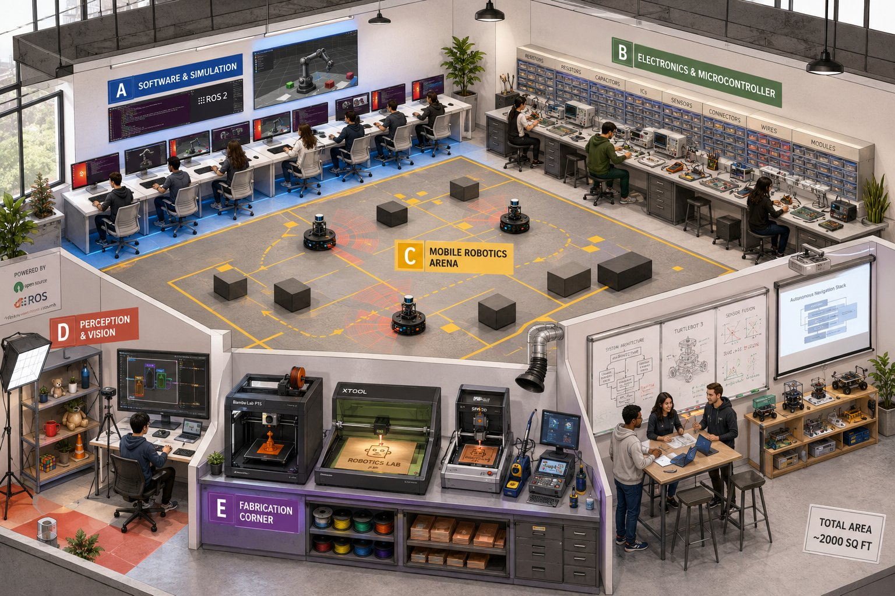
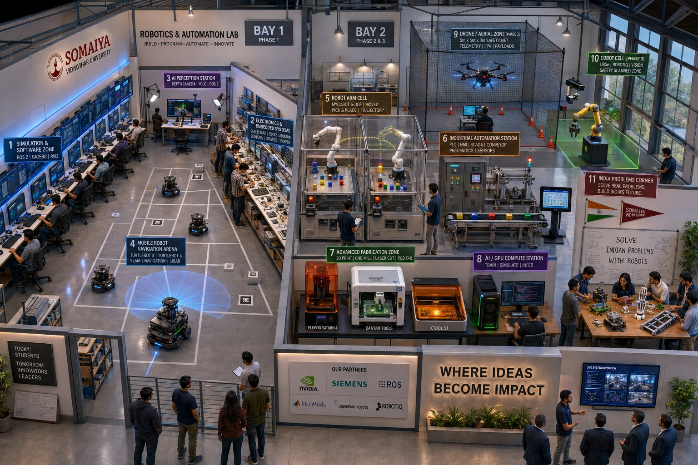

"KJ Somaiya Polytechnic has the intent and ecosystem to build something genuinely useful. What it currently lacks is a technically grounded plan. This document is that plan."
The current approach is hardware-first, understanding-last. Buying robot arms before students can explain a control loop is the most common and most expensive mistake in institutional robotics.
Start before the lab is built. A 4-week Bootstrap course using ₹2.5L of DIY kits can run in any classroom. Students arrive at the lab already knowing what a sensor feels like.
2000 sq ft is workable if zoned deliberately. Six defined stations support 30–40 concurrent students. The layout is specified station by station.
Phase 1 Foundation Lab costs ~₹11L. Most of the learning stack is open-source software on commodity hardware.
A classroom course using robotics DIY kits. No lab construction needed. Students assemble, program, and compete with physical robots in 4 weeks. By the time Phase 1 lab opens, they already understand sensors, actuators, and control logic.
Six zoned stations covering simulation, electronics, mobile robotics, computer vision, fabrication (PCB milling + laser cutting), and discussion. Everything runs on open-source software.
Robot arms, GPU workstation, Jetson AGX Orin, PLC automation rig, advanced fabrication. A myCobot doing live pick-and-place is a 10-minute CSR story.
Universal Robots UR5e cobot, drone program, research-grade measurement. The lab becomes a reference for polytechnic robotics in Maharashtra. Projects enter riidl incubation and national competitions.

Phase 1 Foundation Lab · ~2000 sq ft · Zones A (Software), B (Electronics), C (Arena), D (Perception), E (Fabrication), F (Discussion) · Smithy Shop, Ground Floor

Phase 2–3 Full Lab · 4000–6000 sq ft · Bay 1 (Phase 1 zones) + Bay 2 (Robot arms, PLC, GPU compute, Drone cage, UR5e Cobot)
Track 0 needs only a classroom and 12 DIY kits. Track 1 requires Phase 1 lab. Track 2 requires Phase 2 lab. Each course track is deliberately unlocked by the corresponding lab phase.
Anyone — before the lab exists. School students (Grade 9–12), polytechnic freshers, faculty, curious adults. No prior knowledge assumed.
| Week | Topic | Activity | |
|---|---|---|---|
| W1 | What Is a Robot? | Unbox and name every component. First motion. Sense-Think-Act model. | Hands-on |
| W1 | First Sensor Loop | Ultrasonic sensor. If distance <20cm → stop. First control loop ever written. | Hands-on |
| W2 | Line Follower Challenge | Draw a track. Program kit with IR sensors. Teams compete. Discuss tuning. | Project |
| W2 | Python via Kit | Block coding → 10 lines of Python doing the same task. Instant visual feedback. | Hands-on |
| W3 | Mini Hackathon | 3-hour sprint: proximity alarm, object sorter, or automatic trigger. Present in 2 min. | Project |
| W4 | What Comes Next | Demo videos of TurtleBot SLAM, robot arm, simulation. Sign-ups for Track 1. | Theory |
Polytechnic students, diploma holders, engineers upskilling. No prior robotics knowledge assumed. Bootstrap Track 0 recommended but not required.
| Week | Topic | Lab Activity | |
|---|---|---|---|
| W1 | Electronics & Circuits | Ohm's law, breadboard, first LED blink. Multimeter. Read a datasheet. | Hands-on |
| W2 | Arduino & Microcontrollers | C++ basics. Control a servo. Compare Arduino vs XIAO ESP32C3 vs Pico. | Hands-on |
| W3 | Sensors Deep Dive | Ultrasonic, IR, ToF, IMU, encoder. Calibration. Build distance alarm on XIAO. | Hands-on |
| W4 | Actuators & Mechanisms | Servo, stepper, DC, BLDC. Gear ratios. Build 2-DOF pan-tilt mechanism. | Hands-on |
| W5 | PCB Design Mini-Module | KiCad: design 2-layer sensor breakout. CNC mill it in-house. Solder, test. | Project |
| W6 | Control Systems & PID | Open vs closed loop. PID intuitively then mathematically. Line follower — tune live. | Hands-on |
| W7 | Linux & Python for Robotics | Terminal, SSH, PySerial. Raspberry Pi setup. SSH into TurtleBot. | Hands-on |
| W8 | ROS 2 Introduction | Nodes, topics, services. TurtleSim. Write first publisher + subscriber node. | Hands-on |
| W9 | Gazebo Simulation | Load URDF. Spawn robot. Add LiDAR + camera. Drive with keyboard. | Hands-on |
| W10 | Computer Vision | OpenCV: colour detection, edge, blob tracking. Ball-following robot. | Hands-on |
| W11 | Navigation & SLAM | SLAM Toolbox on TurtleBot 3. Build a real map of the lab room. | Theory |
| W12 | Mini Project + Demo Day | Teams of 3. Choose task. Build in 1 week. Public demo. Explain what failed. | Project |
Students who have completed Foundation Track. Final year diploma, B.E./B.Tech, working engineers upskilling. Projects must be portfolio-grade.
| Module | Topic | What Happens | |
|---|---|---|---|
| M1 | Robot Arm Kinematics | DH parameters, FK/IK from scratch. MoveIt 2. First pick-and-place on myCobot. | Theory |
| M2 | MoveIt 2 & Motion Planning | OMPL planners (RRT, RRTConnect). Cartesian path. Collision objects. | Hands-on |
| M3 | Navigation Stack — Nav2 | Cost maps, planners. Debug nav failures on TurtleBot 4. | Hands-on |
| M4 | Sensor Fusion & EKF | robot_localization. Fuse odometry + IMU + LiDAR. Compare with/without. | Theory |
| M5 | ML for Perception | Collect dataset (Roboflow). Train YOLOv8. Deploy on Jetson Orin. ROS 2 node. | Project |
| M6 | PCB Design for Robots | KiCad: custom motor controller. Bantam mill. Solder, test, document for IP. | Project |
| M7 | PLC & Industrial Automation | TIA Portal ladder logic. Automate conveyor belt with safety interlock. | Hands-on |
| M8 | Isaac Sim | GPU workstation. Synthetic data. Train grasping policy. Sim-to-real gap. | Hands-on |
| M9–16 | Capstone Project | Full system: mechanical + electronics + software + perception. India-problem focus. Industry panel review. | Project |